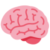
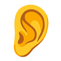
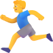

Empowering every child with personalized, accessible education tailored to unique abilities
Accessibility Features
Specialized Learning Categories

Cognitive Development
Memory games, problem-solving activities, and thinking skills development with adaptive difficulty levels.

Sensory Integration
Visual, auditory, and tactile exercises to enhance sensory processing and integration skills.
Communication Skills
Speech therapy, sign language, picture communication, and assistive communication tools.
Social Interaction
Social cues, friendship skills, emotional regulation, and community interaction practice.
Daily Living Skills
Self-care, household tasks, personal hygiene, and independent living preparation.

Motor Skills
Fine and gross motor development, coordination exercises, and adaptive physical activities.
Featured Adaptive Skills
Focus & Attention Training
Interactive games with reminders and progress tracking.
Adaptive Reading
Multi-sensory programs with audio, visuals, and personalized levels.
Math with Manipulatives
Visual and tactile math learning using manipulatives and real-world problems.
Creative Expression
Art, music, and creative writing adapted to various preferences.
Time Management
Visual schedules, routines, and reminders for time awareness.
Community Skills
Safety awareness, money management, and participation skills.
Emotional Learning
Emotion recognition, coping strategies, and vocabulary building.
Adaptive Physical Education
Modified sports and therapeutic movement adapted to abilities.
Assistive Technology
Using devices and communication tools for independence.
Ready to Start Your SkillHub Journey?
Join thousands of learners and teachers in your neighborhood. Whether you're looking to master a new skill or
share your expertise, your community is waiting.